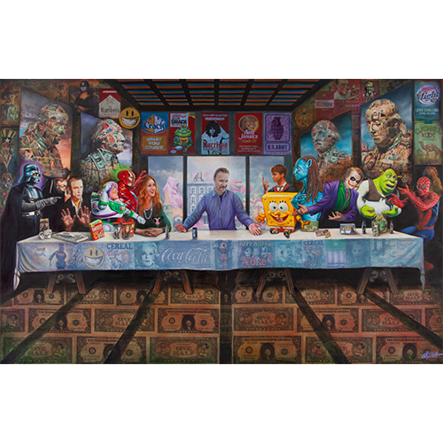

Exhibitions
New Blood, Thinkspace, Los Angeles, California, US, April 28–May 19, 2012.
Literature
Ron English, Original Grin: The Art of Ron English (Paris: Cernunnos, 2019), p. 258. ISBN 978-2374950938.
Notes
This work references Leonardo da Vinci’s The Last Supper.